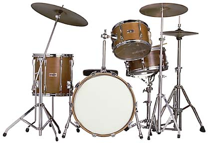

| 
| Drum Kit
A bass drum, snare drum, two toms, two cymbals and one pedal- operated "high-hat" pair of cymbals.
The main differences between drums are their dimensions, the wood they are made of, and teh consistency of the bearing edge. The preferred wood is maple, but mahogany and birch are also used.
|